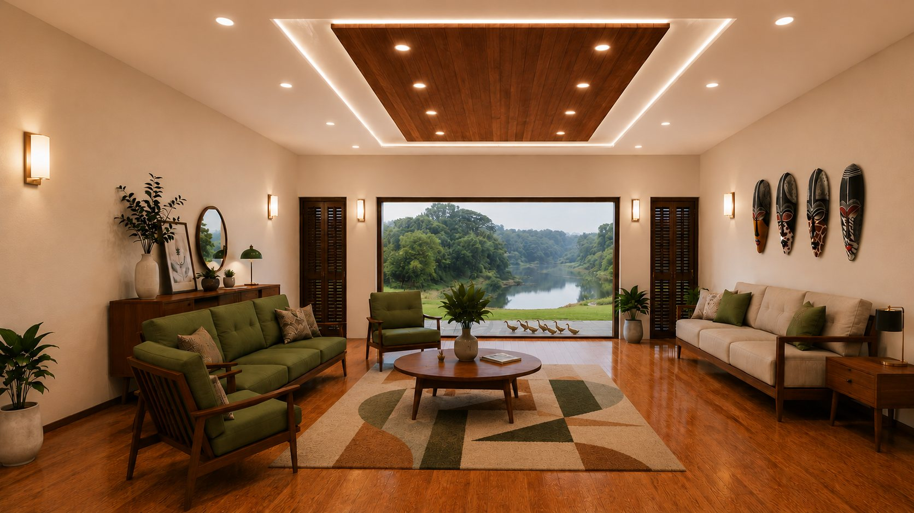
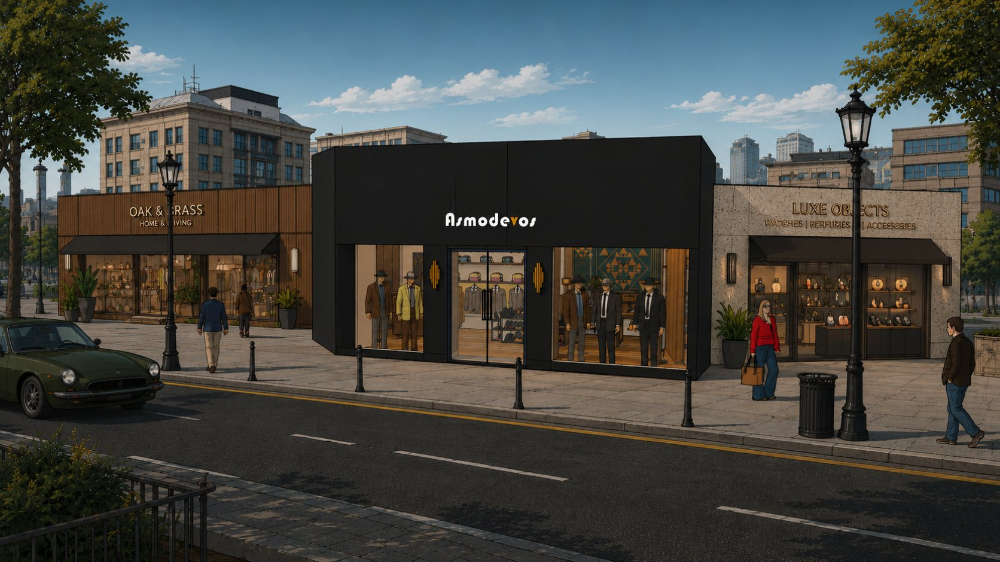
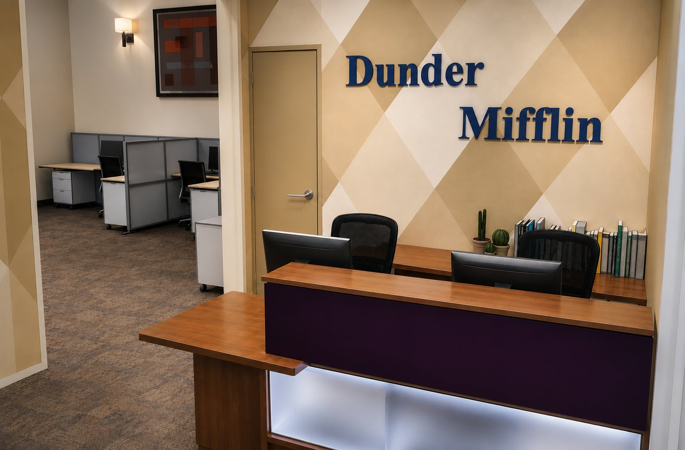
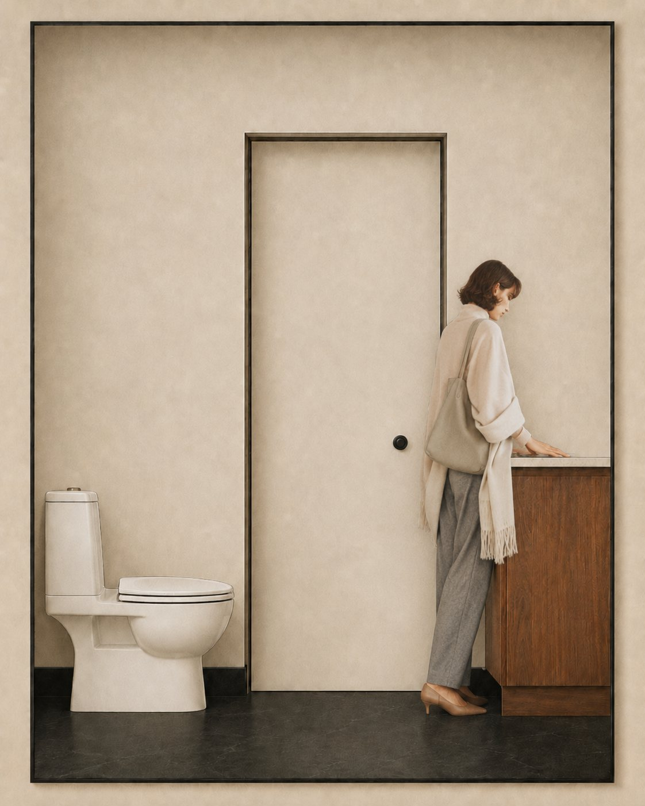
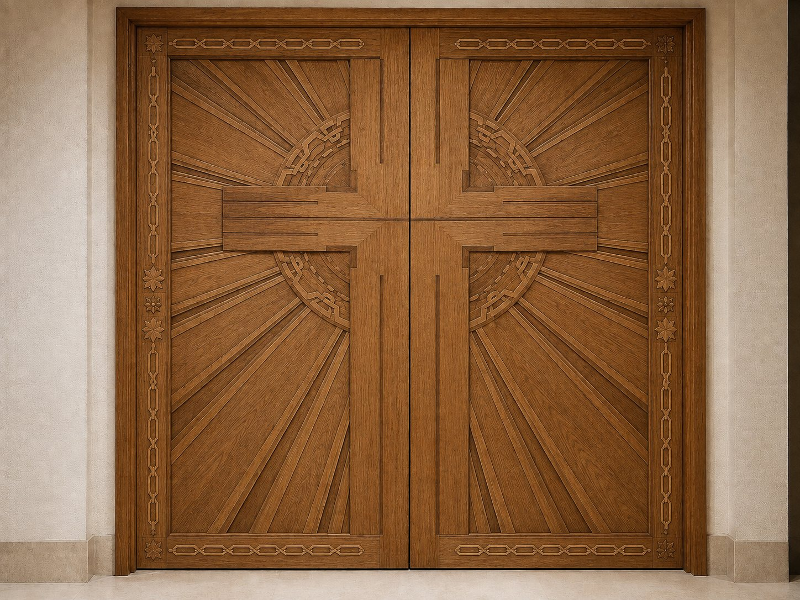
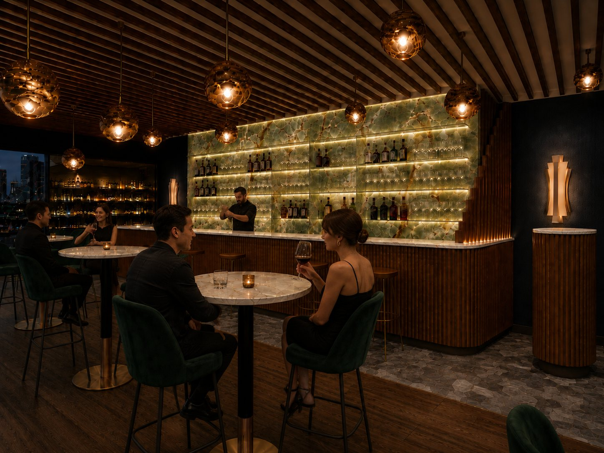

I translate luxury residential concepts into material, light and mood, with visualisations built to make a space believable, desirable, and quietly inevitable long before it is built.
A small body of work, each room chosen for the way it lingers.
A house that keeps something green in view from almost anywhere inside it. A tree grows at the centre of the plan, under an open skylight; the main rooms give up their walls to the landscape outside. Teak, cream plaster and stone, chosen to sit quietly against all of it.


A tailor’s shop has to hold a man’s attention while he stands still to be measured. Stepped walnut, brass and lacquered black, carried from the street frontage through to the fitting lounge at the back.
An ordinary working floor taken seriously. Reception, bullpen, break room and the manager’s corner, all built end to end and lit by one shared late afternoon.

A small room taken the whole way: a dimensioned plan and four elevations, then rendered out in oxblood tile, aged brass and walnut to test how much colour a compact space can carry.


A sanctuary entry and altar wall drawn from one idea: a sustaining light at the centre, radiating outward through cross, heart and dove.
A restaurant and bar in green onyx, brass and dark timber. The backlit stone wall was resolved first, from panel layout to veining and light level, with everything else set against it.

I begin with the feeling of a surface, how stone, timber and textile catch light, and build the atmosphere outward from there.
Beauty that doesn't work isn't luxury. Every visualisation is grounded in real proportion, circulation and how the space is lived in.
Restraint over excess. The aim is a room that feels considered and rare, refined enough to convince the most discerning client.
Interior designer and visualiser specialising in high-end residential spaces. I work alongside design teams from first concept to final render, developing ideas, resolving detail, and producing the imagery that lets a client see, and trust, the space ahead of time.
Trained in interior design, with a working command of the full visualisation pipeline, from spatial planning to photoreal lighting and final post.